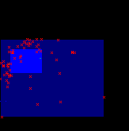
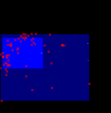

Current version: 0.2 Developer(s): Mauro Muñoz
Accepts categorical maps: no Needs absence points: no
Author(s): Nix, H. A.
Nix, H.A. (1986) A biogeographic analysis of Australian elapid snakes. In: Atlas of Elapid Snakes of Australia. (Ed.) R. Longmore, pp. 4-15. Australian Flora and Fauna Series Number 7. Australian Government Publishing Service: Canberra.
Implements the Bioclimatic Envelope Algorithm. For each given environmental variable the algorithm finds the mean and standard deviation (assuming normal distribution) associated to the occurrence points. Each variable has its own envelope represented by the interval [m - c*s, m + c*s], where 'm' is the mean; 'c' is the cutoff input parameter; and 's' is the standard deviation. Besides the envelope, each environmental variable has additional upper and lower limits taken from the maximum and minimum values related to the set of occurrence points. In this model, any point can be classified as: Suitable: if all associated environmental values fall within the calculated envelopes; Marginal: if one or more associated environmental value falls outside the calculated envelope, but still within the upper and lower limits. Unsuitable: if one or more associated enviromental value falls outside the upper and lower limits. Bioclim's categorical output is mapped to probabilities of 1.0, 0.5 and 0.0 respectively.
Data type: Real Domain: [0, oo) Typical value: 0.674
Meaning: Standard deviation cutoff for all bioclimatic envelopes. Examples of (fraction of inclusion, parameter value) are: (50.0%, 0.674); (68.3%, 1.000); (90.0%, 1.645); (95.0%, 1.960); (99.7%, 3.000)
The following images show two models in the environmental space (temperature x precipitation) generated with the same input (Furcata boliviana localities dataset) but with different values for the "cutoff" parameter:
|  |
| fig. 1: cutoff = 0.674 |
|  |
| fig. 2: cutoff = 0.99 |